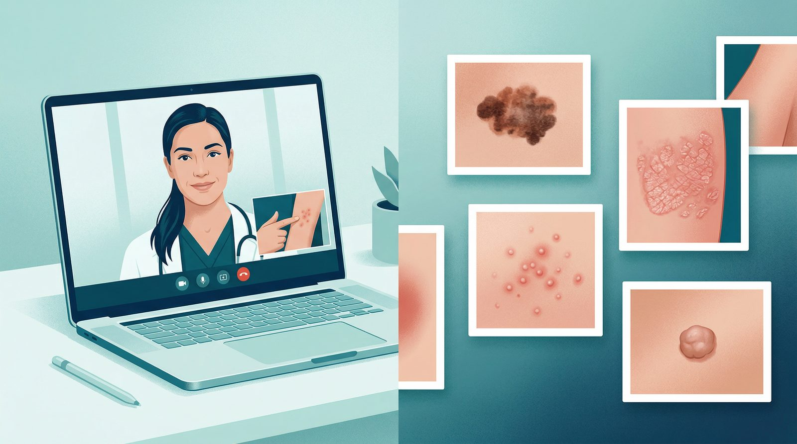
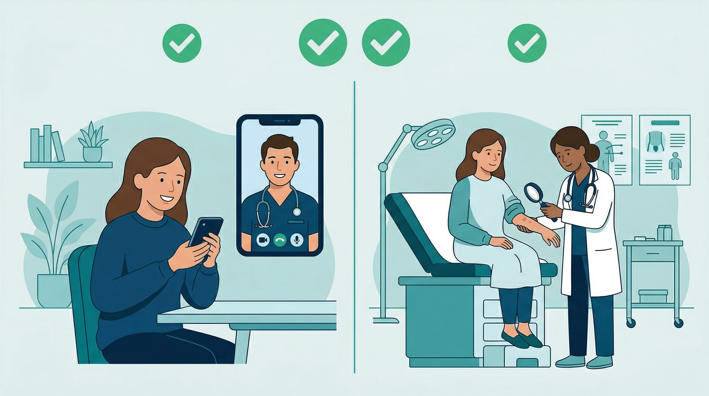

Key Takeaways
- A 2024 scoping review of 21 studies found that teledermatology gave similar outcomes to in-person care on several acne-grading scales, though follow-up was lower with virtual care.[1]
- In a randomized trial of 151 patients with mild to moderate acne, online follow-up visits produced lesion-count improvements similar to office visits.[10]
- In a randomized trial of 156 children and adults with eczema, online follow-up care after a first in-person visit gave equivalent improvements in eczema severity to office follow-up.[11]
- Teledermatologists' eczema diagnoses matched the in-person dermatologist's diagnosis in 84.4% of 109 checked cases, and 72% of patients were managed by primary care with teledermatology support.[7]
- In that same project, the mean wait for an in-person dermatology visit fell from 6.7 months to 1.5 months.[7]

Why This Matters for Acne and Eczema Patients
Getting in to see a dermatologist can take time, and waits are significantly longer in rural areas.[1] If you have acne that's getting worse or an eczema flare that won't quit, that delay is more than an inconvenience. For acne, delays matter most for people at risk of permanent scarring, who need prompt treatment.[1]
Teledermatology has grown fast over the past several years. But growth alone doesn't tell you whether it works. The question patients ask me most often is direct: "Will I get the same quality of care through a video visit as I would sitting in a dermatology office?"
The published evidence now gives a reasonably clear, if incomplete, answer for acne and eczema specifically. Here's what the data shows.
The Acne Evidence
The broadest summary of acne teledermatology is a 2024 scoping review in the Journal of Cutaneous Medicine and Surgery. It included 21 studies, 4 of them randomized controlled trials, and described them in narrative form because the studies were too different to pool.[1] Its conclusion: teledermatology is well-suited to acne management, and compared with in-person care it gave similar outcomes on several acne-grading scales.[1]
The strongest single comparison is a randomized trial of 151 patients with mild to moderate facial acne. Patients completed four follow-up visits either through a secure online platform, sending photos and an update to their dermatologist, or in the office. The decrease in inflammatory lesion count was similar in the two groups (6.67 and 9.39, P = .49), and patients and dermatologists reported comparable satisfaction.[10] Separately, a study of 105 patients found a kappa value of 0.611 between photo-based teledermatology and face-to-face acne severity assessments, which the authors rated as good agreement, with 75.2% of assessments giving the same result.[3]
Patient satisfaction in the review was comparable to in-person care, with a large proportion of patients preferring virtual care to traditional visits.[1] For patients on isotretinoin, the review notes that virtual visits may ease the extra steps required before each prescription, such as pregnancy tests and, in the United States, iPLEDGE requirements.[1]
Access is the other potential gain. The review found that teledermatology may improve access for rural patients, who travel farther and wait longer to see a dermatologist.[1]
Larger platforms are now being described, but not yet tested against in-person care. A 2025 report on an acne telemedicine program combining live consultations and submitted photos recorded 16,800 registrations and 3,305 completed visits in its first 10 months. The authors note that it describes who used the platform rather than whether treatment worked, and that it had no comparison group.[2]
One area to watch: in a study of acne patients aged 18 to 35 at a U.S. academic center, those first seen by teledermatology were less likely to follow up within 90 days than those seen face-to-face (13.0% vs. 31.0%), and the authors called for better follow-up education.[9] A practical fix is to schedule the next check-in before the current visit ends. Making follow-up easy matters more than making it available.

The Eczema Evidence
Eczema, specifically atopic dermatitis, presents differently than acne for telehealth. It flares unpredictably, and day-to-day control depends heavily on avoiding triggers, keeping skin hydrated, treating inflammation and sticking with the plan.[5] Those features make it a reasonable candidate for virtual care, and several studies have tested it.
The most direct comparison is a 1-year randomized equivalency trial of 156 children and adults with atopic dermatitis. After a first in-person visit, patients were assigned to online follow-up (sending photos and history to a dermatologist, who replied and prescribed online) or usual office follow-up. Improvement in eczema severity on the POEM scale was equivalent, and 38.4% of the online group versus 43.6% of the in-person group reached clear or nearly clear skin, a difference within the trial's equivalence margin.[11]
A 2022 study tested a 6-week smartphone app program (education, treatment reminders and lifestyle coaching) in 21 adults with atopic dermatitis, with no comparison group. SCORAD fell 44% (from 56.1 to 31.2) and POEM fell 46% (from 15.7 to 8.5), both p<0.001, and patients who kept up or improved regular skin care had larger improvements.[5] The study was small, uncontrolled and run with the company that developed the app, so it shows feasibility rather than proof.
Diagnostic accuracy is a common concern with virtual skin evaluations. A 2020 retrospective study from São Paulo, Brazil, looked at photo-based teledermatology supporting primary care physicians. Among 109 patients who were later seen in person, the teledermatologist's atopic dermatitis diagnosis matched the in-person dermatologist's in 84.4%. Overall, 72% of patients with atopic dermatitis were managed by their primary care physician with teledermatology support, without an in-person specialist visit.[7] During the project, the mean wait for an in-person dermatology visit fell from 6.7 months to 1.5 months.[7]
A 2025 systematic review and meta-analysis in Dermatitis found that, in four teleconsultation studies, decreases in POEM, Investigator Global Assessment, SCORAD and DLQI scores were comparable with the control arm. The authors concluded that telemedicine can be a useful adjunct to face-to-face consultations for atopic dermatitis.[4]
A 2026 randomized trial in the Journal of Medical Internet Research enrolled 615 children aged 0 to 6 with moderate-to-severe atopic dermatitis.[6] When caregivers used a 12-week smartphone education program alongside standard care, the 12-week relapse rate was 16.6%, compared with 24.0% with face-to-face consultation alone (relative risk 0.69, P=.02). Differences beyond 12 weeks were not statistically significant, and 58.0% of caregivers kept up regular weekly use of the platform. Because the trial was in young children, it shows how education can help families manage flares rather than results for adults.
A separate randomized trial of 102 adults found that 12 weeks of therapist-guided internet-delivered cognitive behavioral therapy (CBT) reduced eczema symptoms on the POEM scale more than a standard-care control (P<.001; effect size d=0.75), and the gains were sustained at 12 months. The CBT also reduced itch, perceived stress and sleep problems.[8] This was an add-on behavioral treatment, not a replacement for medical care.
| Outcome Measure | Acne (Telehealth) | Eczema (Telehealth) |
|---|---|---|
| Clinical outcomes vs. in-person | Similar lesion-count improvement with online follow-up (randomized trial, 151 patients)[10] | Equivalent improvement with online follow-up (randomized trial, 156 patients)[11] |
| Symptom improvement | Similar to in-person care on several acne-grading scales (scoping review)[1] | 44% SCORAD reduction in a 6-week, 21-patient app study with no control group[5] |
| Patient satisfaction | Comparable satisfaction with online and office follow-up[10] | High treatment satisfaction with internet-delivered CBT[8] |
| Wait time reduction | Rural patients wait significantly longer; teledermatology may improve rural access[1] | 6.7 months to 1.5 months for an in-person visit (Brazil public health project)[7] |
| Key limitation | Lower 90-day follow-up (13.0% vs. 31.0%)[9] | Relapse benefit of a children's education program not significant after 12 weeks[6] |
What This Means for Patients
If you're dealing with acne or eczema, here's what I take from this evidence:
Remote assessments usually agree with in-person ones. In the studies above, photo-based assessments matched in-person assessments most of the time (75.2% for acne severity, 84.4% for the atopic dermatitis diagnosis).[3][7] Starting treatment sooner matters most for acne that is at risk of scarring.[1]
Follow-up visits are where telehealth may add the most value. The strongest trials tested online care for follow-up visits, and both found results similar to office care.[10][11] Acne treatment is iterative. Eczema management requires ongoing adjustments. Both conditions benefit from regular, short check-ins, the kind that are easy to do over video but hard to justify as a full in-person appointment.
Digital tools between visits may help. In a trial in young children, caregivers who used a smartphone education program alongside standard care saw fewer relapses over 12 weeks than those who had face-to-face consultation alone, though the difference was no longer significant after that.[6] This isn't a replacement for physician care; it's a layer on top of it.
Satisfaction is generally good. In the acne review, a large proportion of patients preferred virtual care to traditional visits, and in a randomized trial patients rated online and office follow-up similarly.[1][10]
When In-Person Care Is Still Needed
Telehealth can work well for many acne and eczema visits, but it doesn't replace every dermatology visit. The American Academy of Dermatology's teledermatology standards describe access to in-person visits, when necessary, as a critical component of safe and effective telecare.[12] Here's where I still refer patients for hands-on evaluation:
Works Well Virtually
- Mild-to-moderate acne evaluation and treatment
- Acne medication follow-ups (including isotretinoin check-ins)
- Eczema flare management and treatment adjustments
- Ongoing eczema maintenance and education
- Prescription renewals for stable skin conditions
Needs In-Person Evaluation
- First visit for isotretinoin initiation (baseline labs, iPLEDGE enrollment)
- Severe nodulocystic acne requiring procedural intervention
- Suspected skin biopsy for uncertain diagnoses
- Patch testing for contact dermatitis
- Widespread or atypical rashes that need full-body exam
- Eczema unresponsive to two or more treatment regimens
The best approach is usually a blend. A virtual visit can be a starting point for evaluation, treatment and a care plan, with follow-up video visits for monitoring and adjustments and in-person appointments for the scenarios listed above. Keep in mind that the strongest trials tested online care for follow-up visits, and the acne review suggests an in-person first visit as one option when photos or video can't show enough.[1][10][11]
References
- Mehta S, Metko D, Maazi M, Wang OJE, Li MK. Teledermatology and Virtual Visits for Acne Management: A Review. J Cutan Med Surg. 2025;29(1):63-68. Epub November 1, 2024. Scoping review. PMID 39487591. pmc.ncbi.nlm.nih.gov
- Mordente I, Puglia F, Cassese R. A Telemedicine-Based Approach for Acne Management: Method Overview and Demographic Profile of Early Participants. Clin Cosmet Investig Dermatol. 2025;18:2259-2265. Letter. PMID 40955428. pmc.ncbi.nlm.nih.gov
- Jusuf NK, Putra IB, Puteri Rangkuti AD. Assessing Acne Severity: Teledermatology Versus Face to Face Consultations During the COVID-19 Pandemic. J Clin Aesthet Dermatol. 2023;16(1):30-34. PMID 36743968. jcadonline.com
- Lam BJW, Loh MCS, Yew YW. Telemedicine in the Care of Patients with Atopic Dermatitis: A Systematic Review and Meta-Analysis. Dermatitis. 2025;37(4):632-639. PMID 40314137. pubmed.ncbi.nlm.nih.gov
- Gudmundsdóttir SL, Ballarini T, Ámundadóttir ML, et al. Clinical Efficacy of a Digital Intervention for Patients with Atopic Dermatitis: a Prospective Single-Center Study. Dermatol Ther (Heidelb). 2022;12(11):2601-2611. PMID 36239906. pmc.ncbi.nlm.nih.gov
- Yang H, Shu H, Wang LH, et al. Smartphone-Based Digital Eczema Education Program for Atopic Dermatitis in Children Aged 0 to 6 Years: Multicenter, Randomized, Parallel Controlled Clinical Study. J Med Internet Res. 2026;28:e79559. PMID 41499674. jmir.org
- Giavina-Bianchi M, Giavina-Bianchi P, Santos AP, Rizzo LV, Cordioli E. Accuracy and efficiency of telemedicine in atopic dermatitis. JAAD Int. 2020;1(2):175-181. PMID 34409337. pmc.ncbi.nlm.nih.gov
- Hedman-Lagerlöf E, Fust J, Axelsson E, et al. Internet-Delivered Cognitive Behavior Therapy for Atopic Dermatitis: A Randomized Clinical Trial. JAMA Dermatol. 2021;157(7):796-804. PMID 34009282. jamanetwork.com
- Khosravi H, Zhang S, Siripong N, Moorhead A, English JC III. Comparing acne follow-up: teledermatology versus outpatient dermatology visits. Dermatol Online J. 2020;26(4). PMID 32621674. pubmed.ncbi.nlm.nih.gov
- Watson AJ, Bergman H, Williams CM, Kvedar JC. A randomized trial to evaluate the efficacy of online follow-up visits in the management of acne. Arch Dermatol. 2010;146(4):406-411. PMID 20404229. pubmed.ncbi.nlm.nih.gov
- Armstrong AW, Johnson MA, Lin S, Maverakis E, Fazel N, Liu FT. Patient-centered, direct-access online care for management of atopic dermatitis: a randomized clinical trial. JAMA Dermatol. 2015;151(2):154-160. PMID 25338198. pubmed.ncbi.nlm.nih.gov
- American Academy of Dermatology. AAD Teledermatology Standards. Teledermatology Committee. Undated web page; accessed November 15, 2026. aad.org